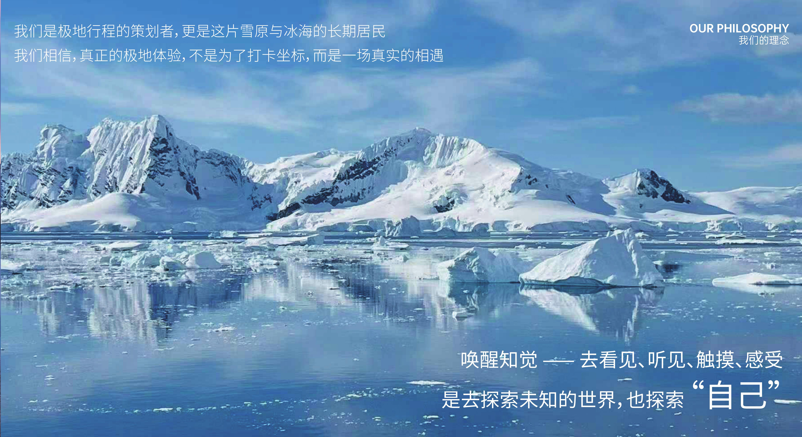
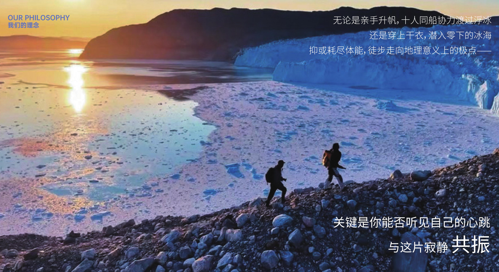
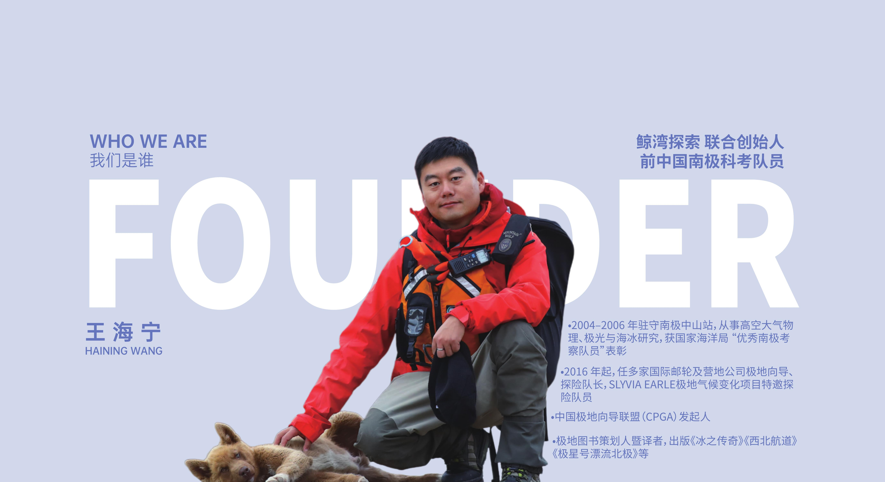
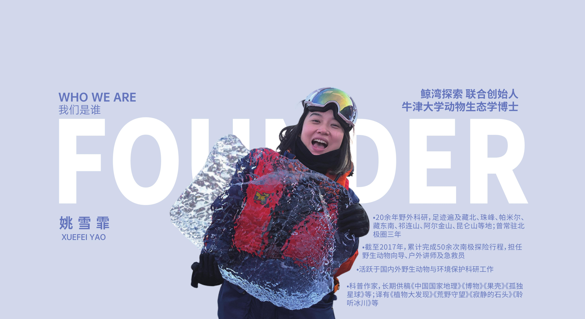

我们是极地行程的策划者，更是这片雪原与冰海的长期居民。
我们相信，真正的极地体验，不是为了打卡坐标，而是一场真实的相遇 —— 唤醒知觉，去看见、听见、触摸、感受，去探索未知的世界，也探索"自己"。
无论是亲手升帆、十人同船协力渡过浮冰，还是穿上干衣潜入零下的冰海，抑或耗尽体能徒步走向地理意义上的极点 —— 关键是你能否听见自己的心跳，与这片寂静共振。
因此 —— 我们拒绝喧嚣，拒绝表演式探险，更拒绝走马观花的旅游。只做小规模、低干扰、亲手勘线、亲自带队的行程，带你真正"在场"而非"路过"。
我们是极地行程的策划者，更是这片雪原与冰海的长期居民。
我们相信，真正的极地体验，不是为了打卡坐标，而是一场真实的相遇 —— 唤醒知觉，去看见、听见、触摸、感受，去探索未知的世界，也探索"自己"。
无论是亲手升帆、十人同船协力渡过浮冰，还是穿上干衣潜入零下的冰海，抑或耗尽体能徒步走向地理意义上的极点 —— 关键是你能否听见自己的心跳，与这片寂静共振。
因此 —— 我们拒绝喧嚣，拒绝表演式探险，更拒绝走马观花的旅游。只做小规模、低干扰、亲手勘线、亲自带队的行程，带你真正"在场"而非"路过"。




极地峡湾冰山密布、水道狭窄、风浪平静。大帆船吃水浅、转向灵活，能安全深入大型邮轮无法抵达的冰缘秘境。
"复古"仅指外观。船上配备与现代探险船同级的安全系统：星链卫星通信 + 全天候无线电救援、导航雷达 + 电子海图 + AIS 船舶识别、海水淡化 + 自动充气救生筏 + AED 急救设备。
近年百人以上邮轮在格陵兰、南极频发搁浅、机械故障、客舱破损。同期极地小帆船（载客 ≤ 10 人）几乎零搁浅、零重大救援、零伤亡。人数少、团队精，应急响应更高效。
全体船员与探险向导均接受野外急救与极地救援培训，船上配备基础医疗及 AED 设备，可在第一时间处理突发状况，并通过卫星系统联动后方支援。